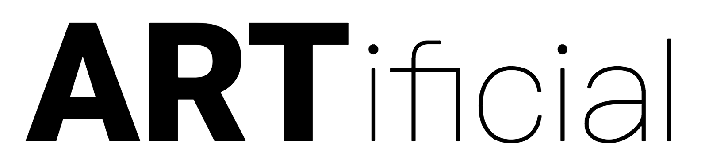

VERSION FRANÇAISE
WHAT
ARTificial is a visual arts exhibit where art and artificial intelligence meet.
WHEN AND WHERE
The ARTificial first visual arts exhibit will be held in Montreal at EspacePOP (5587 Park Avenue, Montréal, Qc) on December 6th and 7th 2018.
HOW TO GET THERE
Espace POP is located in the heart of the Mile-End neighborhood, close to the corner of Park Avenue and Saint-Viateur.
From the Place-d'Armes station: Take the 80 North bus. The stop is located at the corner of Saint-Laurent and Saint-Antoine.
From the Laurier station: Take the 51 bus and stop at Park Avenue. Talk the 80 North bus to Saint-Viateur or walk on Park Avenue towards the North up until Saint-Viateur.
ARTISTS
Our first edition will display pieces by Sarah Friend, Tom White, and Rob Venables. (More information to come.)
SPONSORS
ARTificial would like to thank spell.run for their support.
If you are an agency or a business involved in the fields of culture, arts or technology and you would like to support our event, please get in touch with us at artificialmtl@gmail.com
ABOUT
The main organizer of the event is Edith Viau.
CONTACT
We can be reached at: artificialmtl@gmail.com. Also on Twitter: @artificialmtl.

Last updated: December 2nd 2018